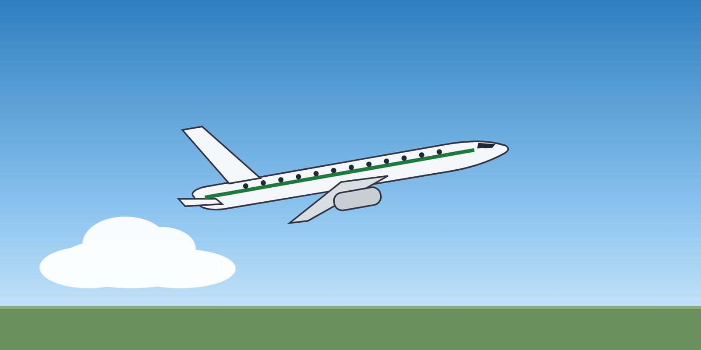

Lesson 24: Engine and Propeller Effects: Jet and Turboprop
Learning objectives
- Explain total energy as kinetic, potential and chemical (thrust) energy.
- Describe how thrust changes affect pitch on underwing-engine jets (B737-800).
- Describe propeller slipstream, torque and asymmetric effects on turboprops (Q400, Q200) and their role in upsets and recovery.

Three forms of energy
Lesson 10 described the exchange between kinetic energy (speed) and potential energy (altitude). The third form is chemical energy: the fuel, turned into thrust by the engines. Only thrust minus drag can add energy to the aircraft. How quickly and how much depends on the engine type, the altitude and the speed.
| Turbofan (B737-800) | Turboprop (Q400, Q200) | |
|---|---|---|
| Response from low power | Slow: several seconds to spool up from idle | Fast: power and propeller respond quickly |
| Effect on pitch | Underwing engines: thrust increase = nose-up moment; reduction = nose-down | Slipstream over wing and tail changes lift and pitch with power |
| Effect on yaw and roll | Small with both engines; large asymmetry after engine failure | Torque, slipstream and asymmetric blade effect: yaw and roll with large power changes at low speed |
| Thrust at high altitude | Much reduced — little excess thrust | Reduced; lower operating altitudes |
Jets: the pitch-thrust couple
- The B737-800 engines are below the centre of gravity. Adding thrust pitches the nose up; reducing it pitches the nose down.
- At low speed with high thrust, the elevator may not be able to stop the nose-up moment. This is why, in a nose-high, low-speed upset or a stall, a thrust reduction may be needed to get the nose down (Lessons 20 and 21).
- From idle, the spool-up time means that thrust arrives late. Anticipate: energy that is not there cannot be created instantly.
Turboprops: propeller effects
- Slipstream — the propellers blow air over the parts of the wing behind them and over the tail. With high power, that part of the wing produces more lift, so the power-on stall speed is lower than the power-off one. A sudden power reduction removes that extra lift.
- Torque and asymmetric blade effect — large power changes at low speed and high angle of attack create yaw and roll tendencies that the pilot must correct with rudder and aileron.
- Tail effects — on T-tail aircraft such as the Dash 8 family, slipstream and wing wake over the tail change with power and angle of attack. Stall characteristics are why some types are fitted with a stick pusher (check your AOM).
- Engine failure — a windmilling, unfeathered propeller creates large drag and yaw. The autofeather and the engine failure procedure exist to remove it quickly.
On a turboprop at low speed, apply power smoothly and be ready with rudder to keep the aircraft coordinated. An abrupt full-power application near the stall can produce a yaw and roll that turns a recoverable situation into an upset.
Icing and contamination
Ice on the wing or tail raises the stall speed and can cause a stall before the normal stall warning, with roll-off or pitch-down. Turboprops spend more time at the altitudes where icing is common. Respect the ice protection procedures and the icing speed and stall-warning settings of your AOM (see the Cold Weather Operations course).
Key takeaways
- Energy: kinetic, potential and chemical — only thrust minus drag adds energy.
- B737-800: thrust up = nose up; in a nose-high low-speed upset, reducing thrust may be needed.
- Turboprops: slipstream lowers the power-on stall speed; large power changes at low speed cause yaw and roll.
- Ice can cause a stall before the normal warning.
Knowledge check
On a turboprop at low speed, why should power be applied smoothly during a stall recovery?